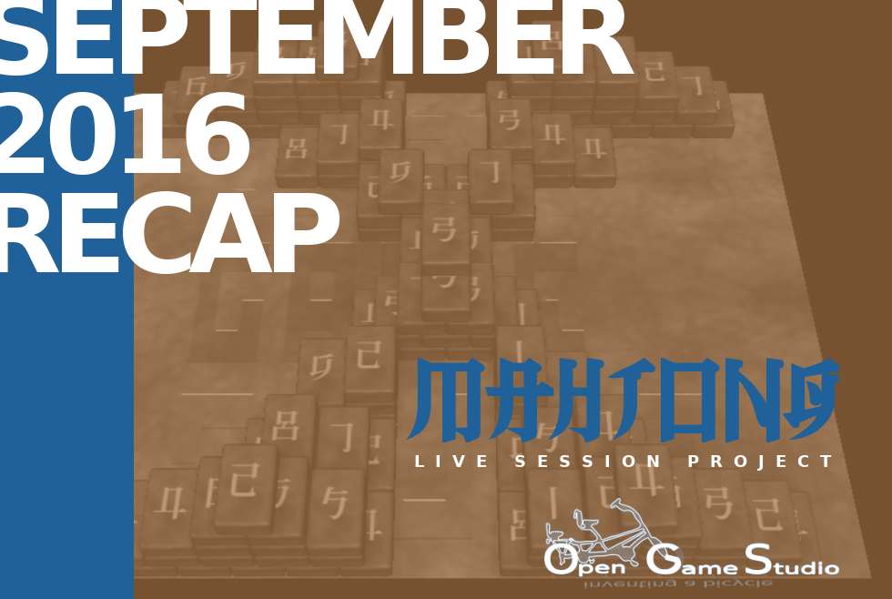
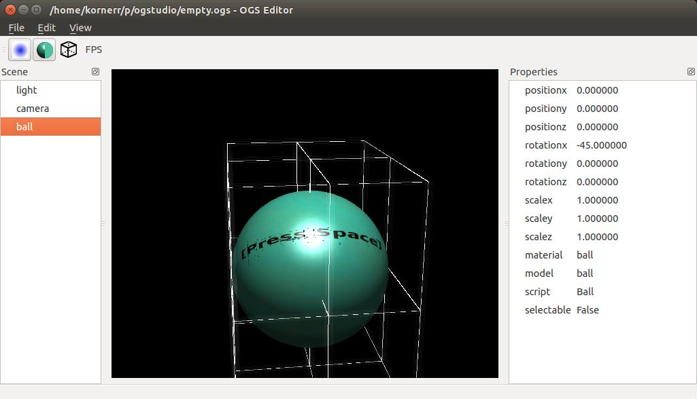

Новости
Сентябрь 2016 кратко
2016-10-11 00:00

Эта статья описывает стадии по подготовке и проведению прямого эфира сентября 2016: черновик, репетиция, прямой эфир и публикация.
Несмотря на то, что сам прямой эфир длится лишь несколько часов, мы готовимся к нему целый месяц. Рассмотрим каждую стадию прямого эфира подробнее.. . .
OGS Editor 0.10 и материалы прямого эфира
2016-10-03 00:00

Внимание: мы не выпустим версию 0.10 для macOS из-за технических проблем с системой сборки. Поддержку macOS вернём к 0.11.
- OGS Editor 0.10 доступен на SourceForge. Просто распакуйте архив и запустите скрипт run.. . .
Пара слов о вчерашнем прямом эфире
2016-09-26 00:00
Создание пасьянса Маджонг прошло успешно, и заняло менее 4 часов.
Мы опубликуем материалы прямого эфира чуть позже на этой неделе.. . .
Прямой эфир через 24 часа
2016-09-24 00:00
Приготовьтесь к прямому эфиру, он начнётся через 24 часа!. . .
Прямой эфир: 25 сентября 2016
2016-09-17 00:00
25 сентября 2016 в 13:00 MSK мы проведём прямой эфир.. . .
Август 2016 кратко
2016-09-03 00:00

Эта статья описывает самые важные технические детали разработки за август: модуль UIQt, его переработку, новый подход к разработке на основе функционала и его преимущества.. . .
Мы вернулись в социальные сети
2016-08-18 00:00
Раз Маджонг – всегда Маджонг
2016-08-10 00:00
Мы начали проект Opensource Game Studio очень давно. Мы хотели дать сообществу свободного программного обеспечения средства для создания игр. Правда, тогда не было ясно, что они из себя должны представлять. Поэтому решили начать с малого: создать игру.. . .
Материалы прямого эфира за май 2016
2016-05-29 00:00
В этот раз мы показали, как создать простую игру на основе Домино. Ниже приведены все материалы, связанные с созданием игры.. . .
Страница 4 из 7